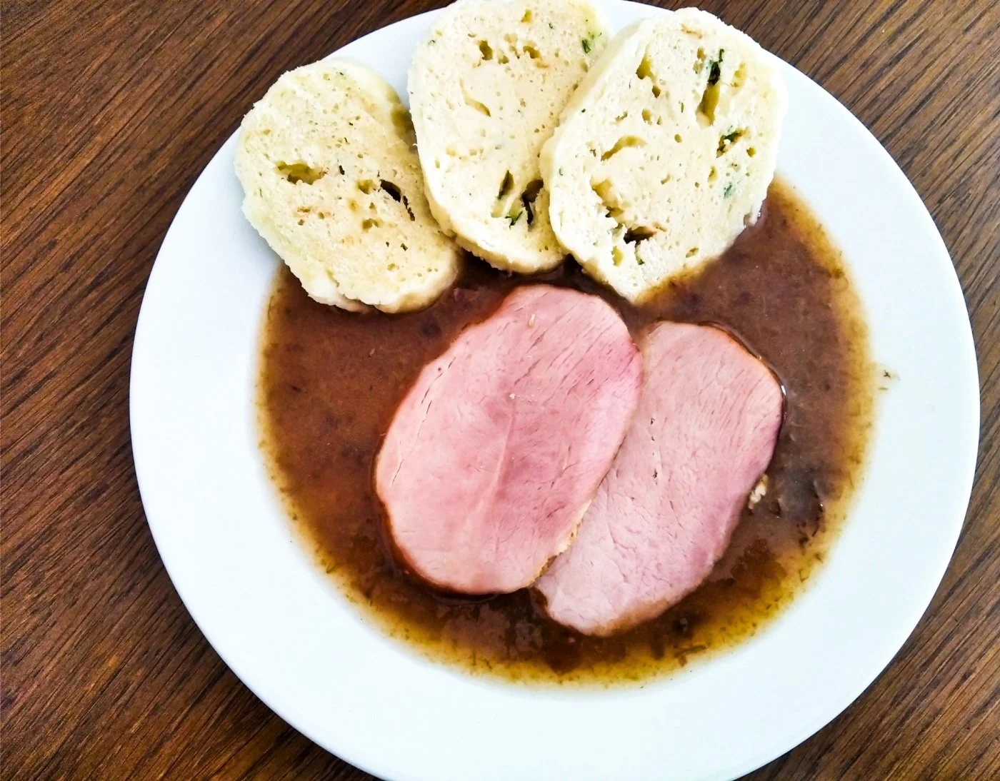

Sladkokyselá omáčka z povidel, dochucená citronem, skořicí a perníkem. Tradičně se podává s uzeným masem a bramborovým knedlíkem.
V kastrolu rozpustíme máslo, přidáme mouku a za stálého míchání připravíme světlou jíšku.
Jíšku zalijeme vodou a dobře rozmícháme. Přidáme povidla a mícháme do rozpuštění.
Přidáme citronovou kůru, skořici a případně i trochu nastrouhaného perníku. Povaříme cca 15 minut.
Dochutíme cukrem, solí a několika kapkami citronové šťávy podle vlastní chuti.
Podáváme s vařeným uzeným masem a bramborovým nebo tvarohovým knedlíkem.